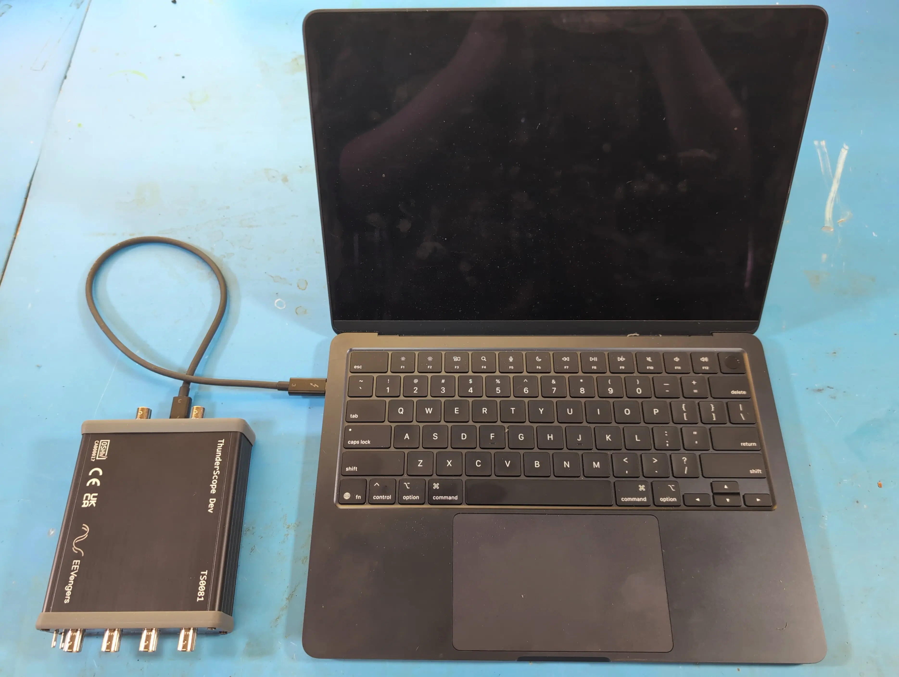
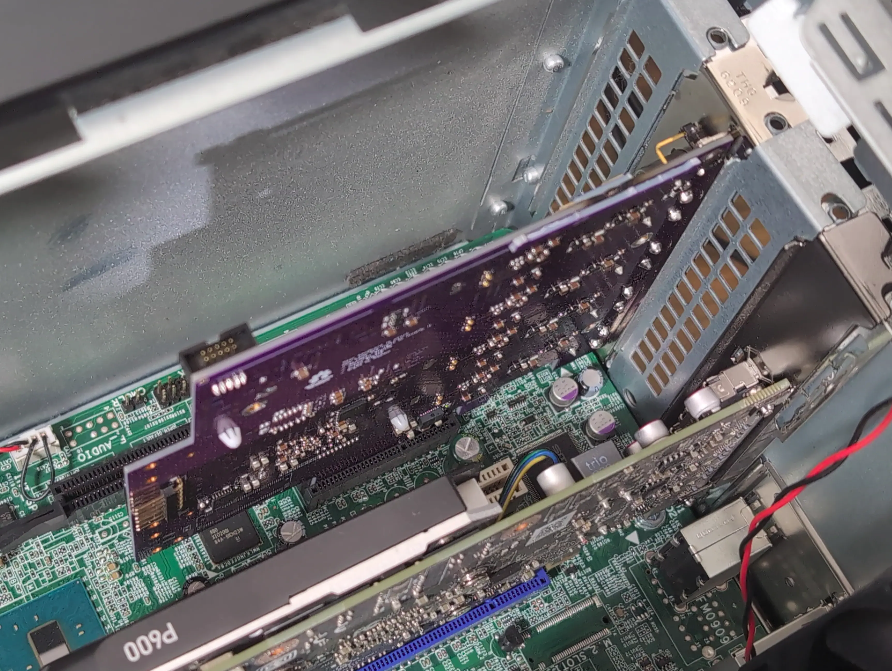

Getting Started#
Follow the instructions below to get started with ThunderScope
Connect the Device#
Connect the ThunderScope to a Thunderbolt 3/4/5 or USB4 port on your host computer

Connect the ThunderScope to a x4 width or higher PCIe slot on your host computer

Prerequisite Steps for Install#
Install the dependencies
$ sudo apt install build-essential git dkms
$ sudo pacman -Syu base-devel git dkms
$ sudo dnf install make automake gcc gcc-c++ kernel-devel git dkms
Clone the ThunderScope repo and navigate to the Software directory
$ git clone --depth 1 https://github.com/EEVengers/ThunderScope.git
$ cd ThunderScope/Software
There are no prerequisites to install the ThunderScope software on Windows
Install Xcode
Clone the ThunderScope repo and navigate to the Software directory
% git clone --depth 1 https://github.com/EEVengers/ThunderScope.git
% cd ThunderScope/Software
Driver Install#
Check if secure boot is enabled
$ mokutil --sb-state
If the command returns “SecureBoot enabled”, you can either disable secure boot in your BIOS settings, or run the commands below to generate an MOK key so that DKMS can sign the driver for you.
$ sudo dkms generate_mok
$ sudo mokutil --import /var/lib/dkms/mok.pub
If you are on Ubuntu or a Ubuntu-based distro, run just the following command instead
$ sudo mokutil --import /var/lib/shim-signed/mok/MOK.der
Reboot your computer. At boot you’ll see the MOK Manager EFI interface. Hit any key to enter the menu, select “Enroll MOK”, “Continue”, then “Yes”. After this, enter the password you set in the previous step and then select the “Reboot” option to complete the MOK key install.
Once you have disabled secure boot or installed your own MOK key, you can proceed with building and installing the driver. Pull the driver repo, install the driver with DKMS and then install the udev rules file.
$ git clone https://github.com/EEVengers/ts_litex_driver_linux.git
$ cd ts_litex_driver_linux
$ sudo make dkms
$ sudo make udev-install
Download and run the ThunderScope driver installer, hit “Next” when prompted by the installer, select “Yes” on the Windows UAC prompt, then click “Finish” on the installer.
Note
This install procedure is a temporary solution until we can get the drivers signed and packaged for macOS.
Disable system integrity protection, instructions on how to do so are here.
Turn on developer mode, this disables some restrictions, like having to run from /Applications
% systemextensionsctl developer on
Pull the driver repo, then build and reload client app and driverkit driver
% git clone https://github.com/EEVengers/ts_litex_driver_macos.git
% cd ts_litex_driver_macos
% ./build.sh
% ./build.sh && ./reload.sh
Follow the system prompts to authorize the driver extension
Software Install#
Navigate back to the software directory and run the install script
$ cd ..
$ ./install_ts_software.sh
Download and install an ngscopeclient package suitable for your distro from the latest tagged release
Download and run the ThunderScope software installer, hit “Next” when prompted by the installer, then click “Finish” on the installer.
Navigate back to the software directory and run the install script
$ cd ..
$ ./install_ts_software.sh
Download and install the ngscopeclient mac .dmg package from the latest tagged release
Start the Software#
Run the launch script in the Software directory of the cloned ThunderScope repo
$ ./ThunderScope.sh
Launch the ThunderScope application from the desktop shortcut or start menu
Run the launch script in the Software directory of the cloned ThunderScope repo
$ ./ThunderScope.sh
This will launch an instance of ngscopeclient that is pre-connected to the TS.NET.Engine triggering software.
Todo
Screenshot of ngscopeclient window that has just been connected
You are now ready to start using ThunderScope!